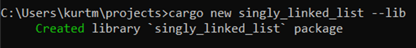
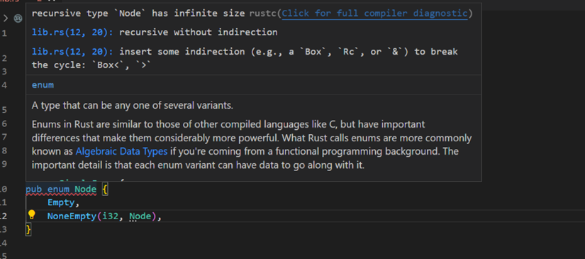
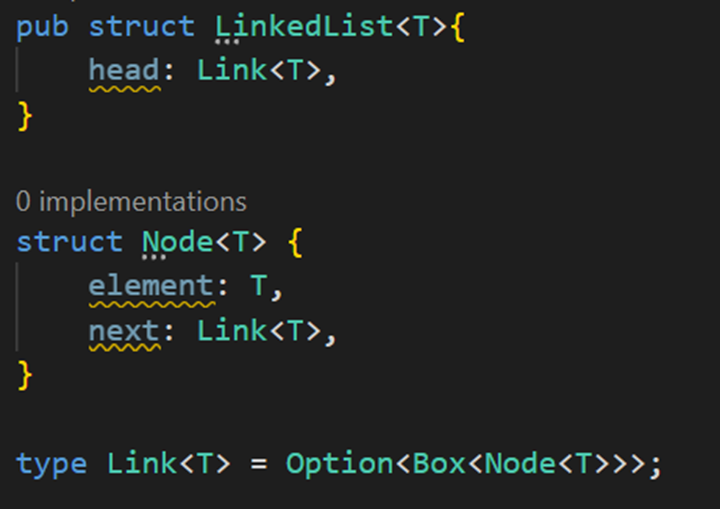
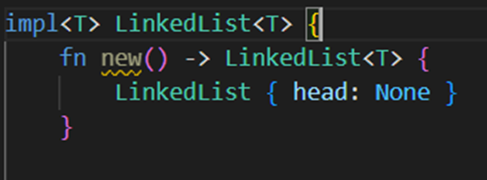
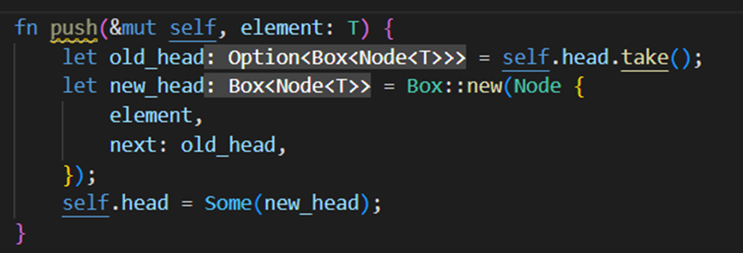
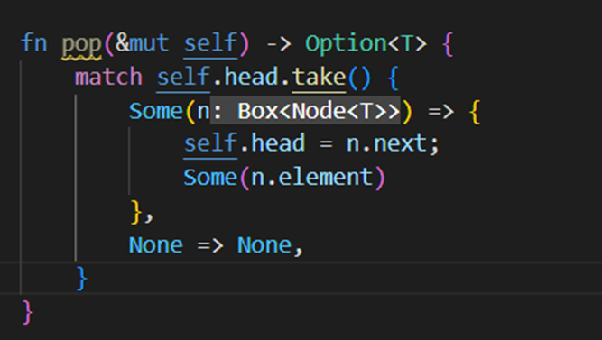
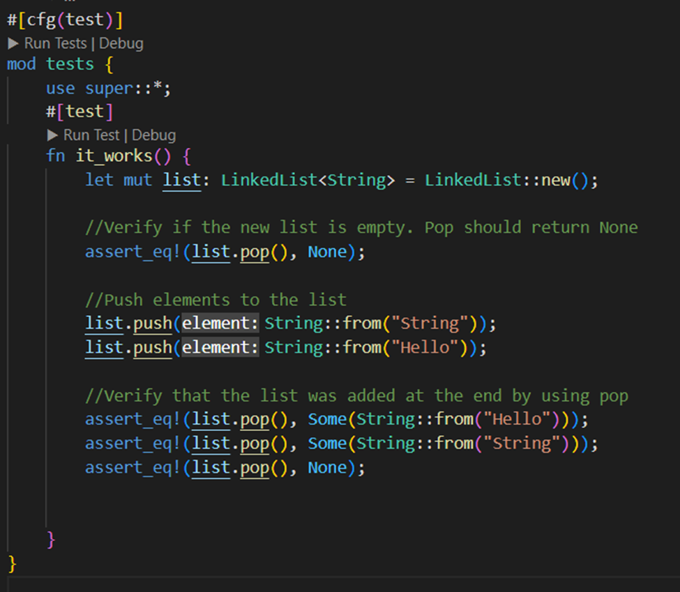
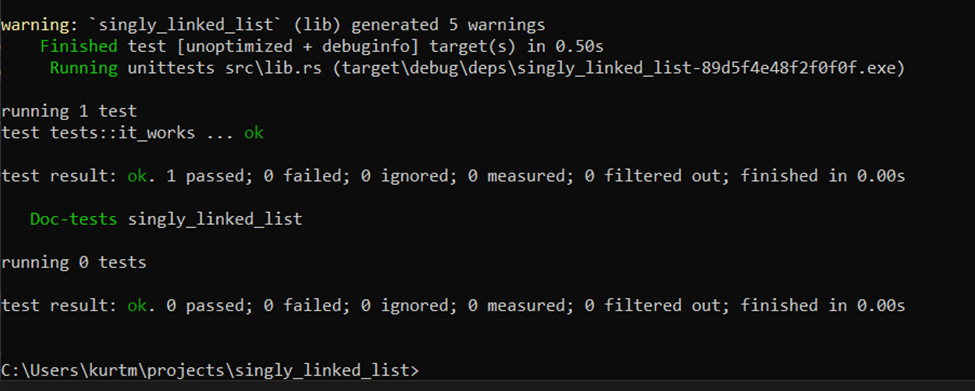

It really is a shame that I wasn't able learn how to create a web application nor connect to a database using the rust programming language. It would have been a great project to showcase its advantages. Knowing that, I initially thought about creating a simple command line interface as it is one of the things that this program excels at, but I decided to use this opportunity to review and recreate something which I learnt in the previous Java courses which is implementing a type of a linked list (Single). I chose to work on this project, because of the benefits it provides for me as a programmer. These advantages include learning about test cases and constructing data structures using a different language.
In my understanding, a linked list is a way to store and manipulate data designed to overcome the limitations
of arrays such as the fixed size and the insertion and deletion operation takes more time. These limitations
are addressed by using references for each individual element in the list, allowing it to change size at
runtime. Furthermore, this will allow insertion and deletion to only work with pointers, saving time on this
process.
Further investigation revealed that implementing linked lists in Rust is more complicated than doing so in
Java. The following are some of the reasons that support this claim:
Rust is strict about how much memory is to be and is being allocated, and linked lists are a data structure that can go on indefinitely.
Rust ownership has an impact on memory allocation. Rust will prevent you from performing certain operations on a linked list where references are junked and not replaced as it will leave the memory in a bad state.
Because of those reasons, I will be constructing this project with the help from different resources. The resources I used for this project include:
The following tools were used to implement the data structures:
Visual Studio Code - Extensions: “rust-analyzer”
Rust Programming Language
A singly linked list is a type of linked list that traverse only in one direction from head node to tail node
of its collection. A node, in case you didn't know, is a basic data structure that contains the data of the
element as well as its references to other elements/nodes. In the case of a singly linked list, only the
reference to the next node is stored.
First off is to initialize our project by creating it through the terminal using cargo.

A linked list is essentially a recursive structure in which a node can be expressed in two ways: empty or
followed by a node that could be one of the two variants, and so on.

This bothers Rust as it will not know how much space a type takes up at compile time. A recursive type is
one type whose size cannot be determined at compile time because the nesting of values could go on
indefinitely. So, we are forced to use some indirection and my resource advised to use the Box which is a
pointer type for heap allocation. Despite this, Rust introduces you to yet another issue with being
disorganised and wasteful, which you can read more about in my first resource. This language is very strict
in that you must optimise null pointers, abstraction, avoid extra junk, and allocate uniformly. So, we end
up with something like this:

As you can see, I went ahead and made the structures capable of accepting a generic type. I also added and
replaced a few things to make them compliant with the Rust compiler, so I'll go over them one by one.
The final line with the "type" keyword defines an alias for an existing type, which is stated to be the node structure that is restricted by a box and is now using option. Option is like the "enum" keyword, but it provides a variety of methods that can be used later.”
The Node struct, it is like the Nodes you use in Java. However, the reference you are using (Link
The LinkedList struct is used for instantiating the list which is only to have a head.
Having the “pub” keyword only to the LinkedList struct helps with the abstraction rules with the Rust compiler.
Now it's time to implement the basic functions in a singly linked list.
Constructor - Create a LinkedList struct and give it a head with a link with option variant none.

Push - This function will add to the stack by using the linked list's mutable self and the element to be
added.
The first line of this function is for taking memory safety into account when adding to the list.
The old head variable should now contain a copy of the head of the list and replaces the head of the list with a none option variant.
The new head variable creates a new boxed node with the element and use the old head as the reference for its next node.
By the end of the function, the new head of the list will be the new node thus adding it to the list.

Pop - This function will delete the last element that was added which is the head and return the element
back.
1. A switch (match) case based off the head of the list (the take method after the head will replace the head with a none for memory safety) and will bring results based off its option variant.
A Some variant will take the node and replace the head of the list with its next reference and return the element of this node.
A None variant will return a none.

Test - All assertions in a single test case you could do with only the basic methods in a linked list.

Result - Successful!
